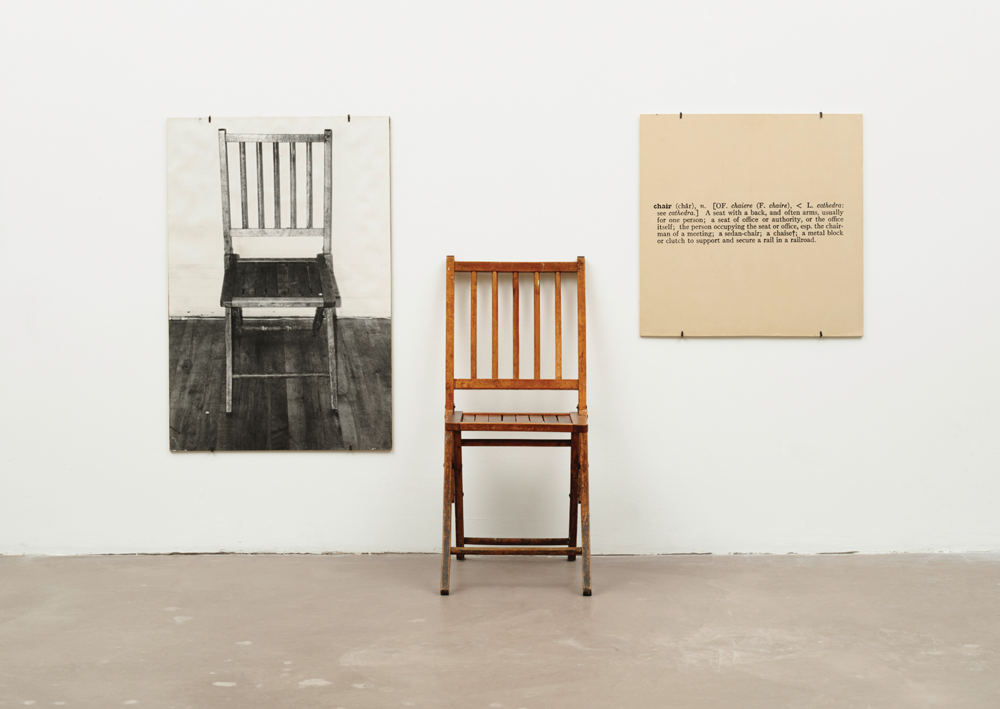
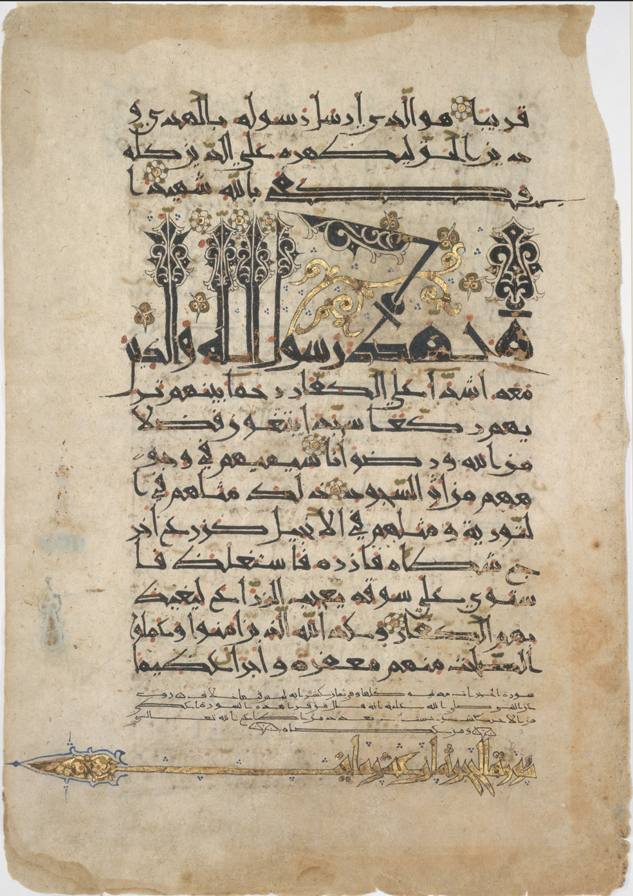
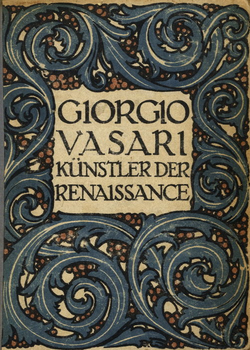
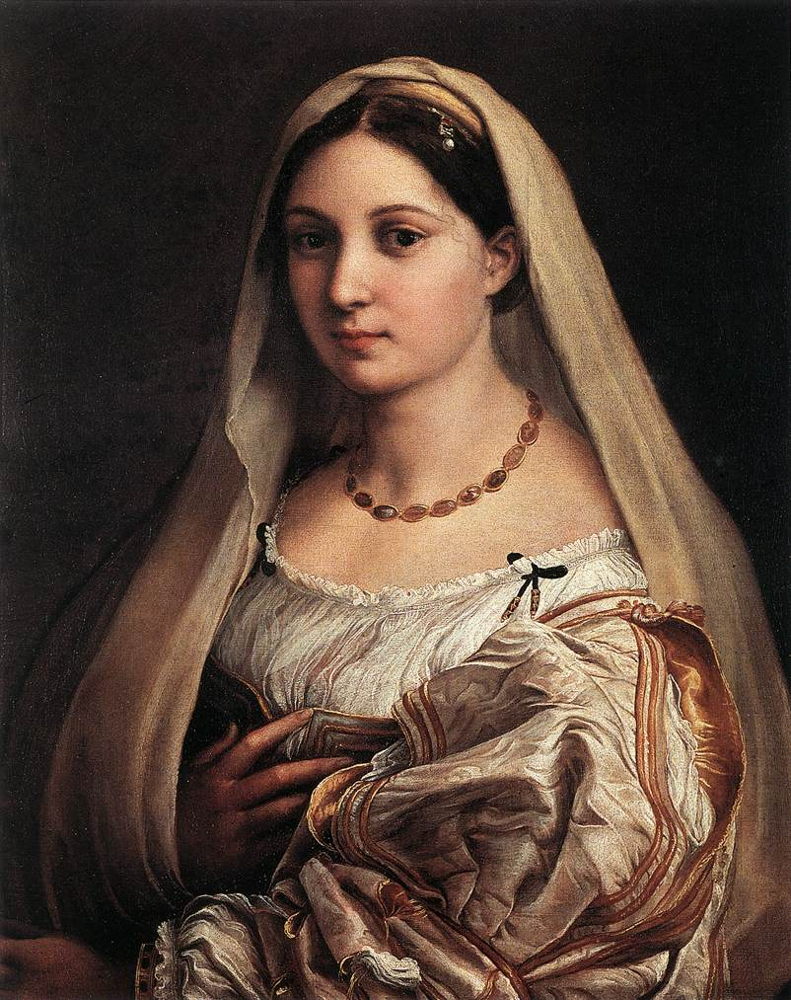
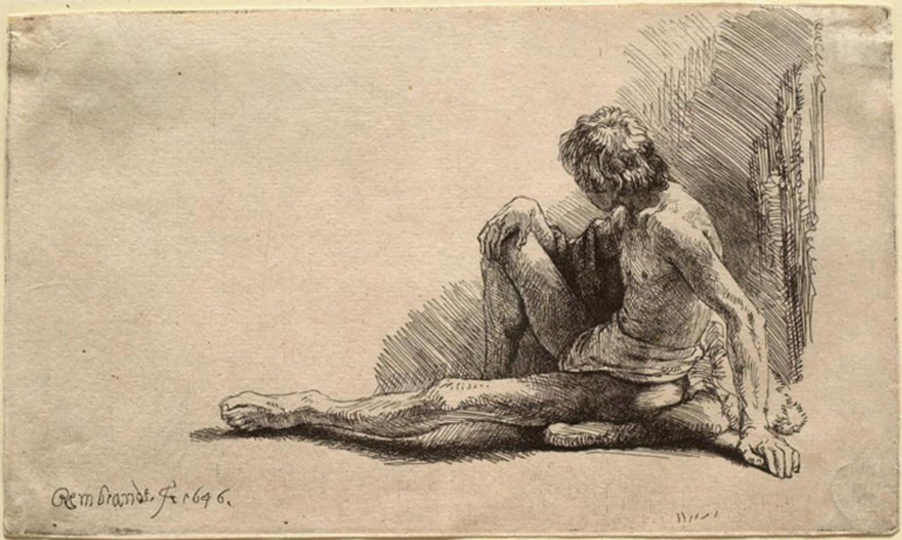
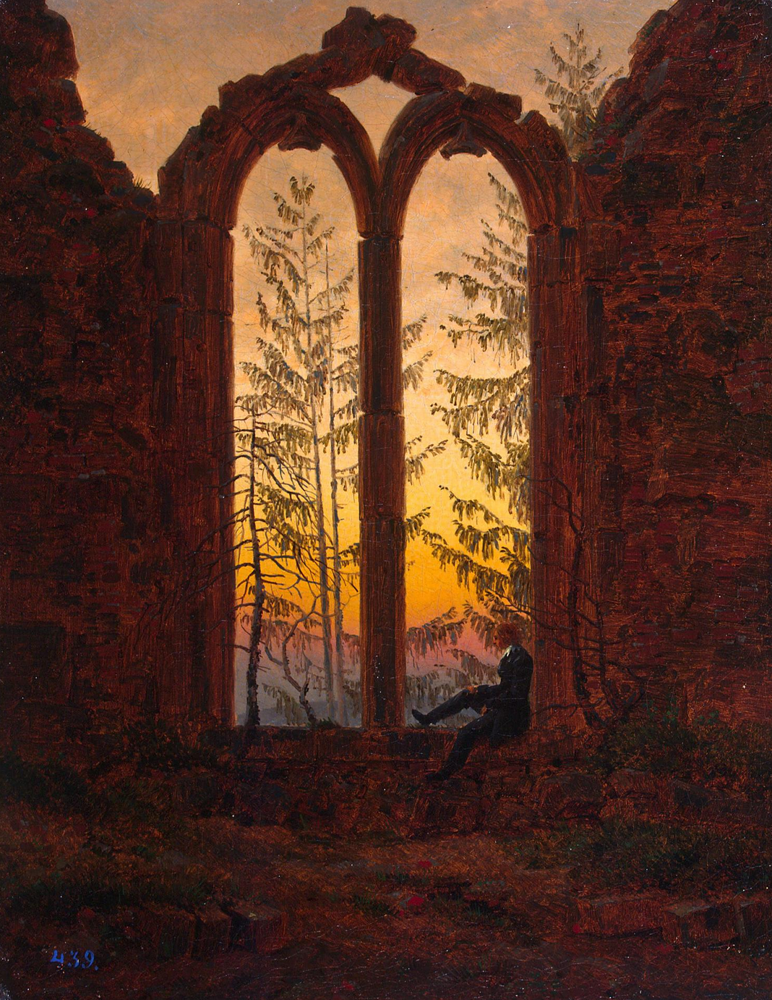
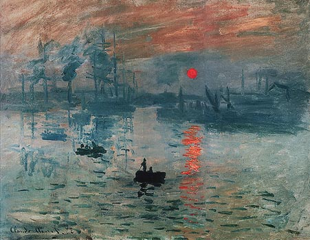
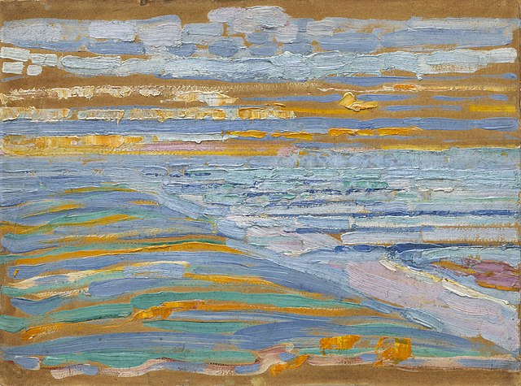
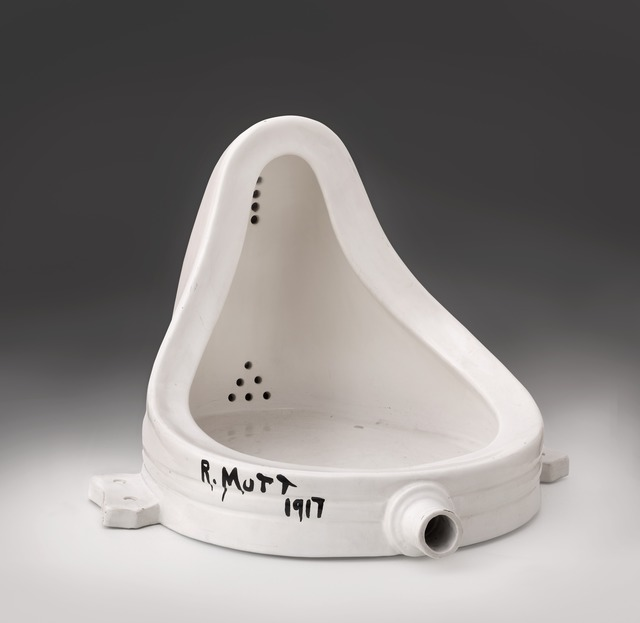
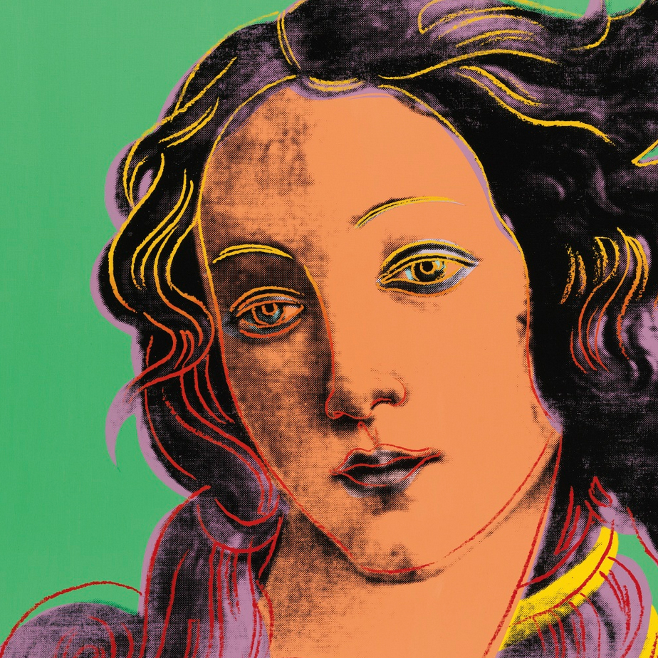

computational representations
plan for the seminar
what representation entails
how computers have added new kinds of representations
how people think about and represent computers
what can we represent with pixels
what can we represent with interaction
what can we represent with communication protocols
what is representation?
representation
homo symbolicus
to look like / to stand in for something / to present a second time

what does each way to represent add or substract to the thing represented?
a brief history of art
the history of art is the history of attitudes towards media production and imagery, towards the role and the function of art, and not least the concept of the artist.
antiquity / middle ages
visual art was about techne, craftsmanship
mimesis is the imitation of the beauty of nature (as opposed to diegesis)
the manipulation of their medium followed strict common patterns
poetics and theater
theater is the mimesis (the representation) of action
the function of that representation is to experience the order of the world and place of humans
question
can there be good representations and bad representations?
what are some examples?
the role of mimesis
plato warns against representation, since he expected that aesthetics could make something seem true.
aristotle saw representation as an essential part of human learning
the middle ages
representing the world order -the catholic church, the king, etc.
still no artists -artisans/craftspersons assembled in guilds.

the guild system however starts to create means of production at larger scale
renaissance
the renaissance is the beginning of two things:
an art market (buyers and sellers)
and the re-focus on the human (as opposed to gods)
humanism
humanism is the concentration on what humans are, and can do, can think and can become.
with this emergence of the concept of individuality comes the ideas of genius and virtuosity
virtuosity = technical skill + signature

a change in media
first, oil paint and perspective drawing allow for more precise and delicate paintings

woodprinting and block printing create a mass of artworks

romanticism
an exploration of the artist's inner psyche

along with the philosophical sublime (kant, hegel) of beatiful truth
modernism
automation takes craftspersons and turns them into unskilled laborers, deepening the divide with "genius artists".
because of an increase of circulation of visual images, artists ask the question once again: why are we here?
the return of material
artists start to move towards commercial creation and turn into "designers"

or they start paying attention to the medium of their work

"remember that a picture, before being a battle horse, a nude, an anecdote or what not, is essentially a flat surface covered with colors assembled in a certain order" - maurice denis

a focus on itself
media are no longer serving as a vehicle or instrument of communication or representation of meaning, but as the very site of meaning and experience.
benjamin vs. adorno is aristotle vs. plato all over again
“The arts, then, have been hunted back to their mediums and there they have been isolated, concentrated and defined. It is by virtue of its medium that each art is unique and strictly itself.” -clemens greenberg
post-modernism
there should be no hierarchical distinction of culture
everything is situated; can be criticized and appropriated


conclusion
art history is a history of representation
it provides a continuing space for renewing human imagination and giving expression, in any form, ephemeral or material, to that imaginative capability
understanding representation
art is not only dependent on a medium, but also on a discourse, on our ability to give value to something.
art criticism allows us to understand the multiple layers of what is represented by an image
levels of analysis
1. form (how does it look?)
"In a work of art, 'form' cannot be divorced from 'content': the distribution of colour and lines, light and shade, volurnes and planes, however delightful as a visual spectacle, must also be understood as carrying a more-than-visual meaning." -Panofsky
2. content (what is it?)
3. context (when was it made? for whom?)
questions
What part of the work catches the viewer's eye first? Are certain elements larger than others?
What are the denotative and connotative aspects of this work?
What are the codes that are brought, either by you, or by contemporary viewers?
How do materials and techniques signify meaning in the work?
Who is being addressed by this work, and how?
analysis
get into groups of two/three
pick an artwork from resources/artworks
prepare a short analysis of the work using the levels⮹
as well as the questions⮹
break
break
media
representation is impossible without a medium.
what is a medium?
(some) definition
Media are symbolic connectors consisting of three interrelated dimensions: message, means, and agents.
Every medium has a “what,” a “how,” and a “by / to whom.”
"I suggest that media can be understood through four principal levels of analysis [...]: materiality, technology, semiotics, and social contexts." -Katherine Hayles
semiotics
semiotics are the conceptual foundations of media
saussure
signifier - the form that the sign takes / signified - the concept it represents
pierce
representamen - the form that the sign takes / interpretant - sense made of the sign / object - the thing to which the sign refers
representamen / signifier
interpretant
object itself
technology
media
human
technology
technology is the practical part of media
what is the difference between simple machines and power machines?
and between power machines and information machines?
"The invention of metal casting was a decisive innovation in ancient Rome and China. The invention of oil painting in Renaissance Europe created a revolution in the circulation of images, freeing them from their muralistic attachment to architecture and transforming them into movable property, commodities to be exchanged and sold and copied in the new industry of reproductive engraving. The invention of artificial perspective produced a new relationship between image making and empirical sciences such as geometry and surveying." -Gershenfeld
collection of tools
hammers (anything human)
fire
mass-media and art
what is the relationship between media and art?
aesthetics and politics
art has now taken both showing and telling, mimesis and diegesis, and as such competes, and overcomes "real" history.
representation today is affected by our most recent, and most trendy media -the computer.